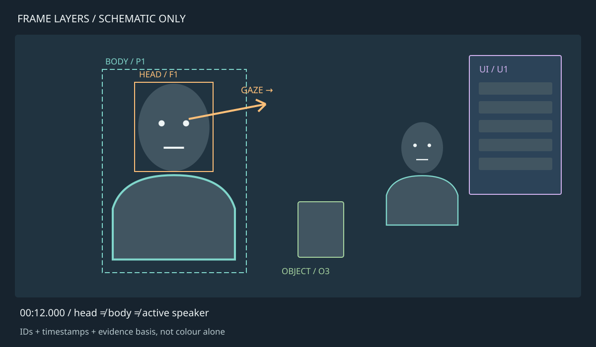

Interface
Screen regions and technical layers

| Region | Responsibility and source |
|---|---|
| Navigation | Studio, recording/transcription, history, storage, settings: studio-navigation.js, studio-shell.js |
| Monitor | Native video and source-clock overlays: editor-workspace.js, video-overlay.js |
| Transport | Playback, labelled analysis-grid step and technical-overlay, download and clothing-mask icons below the video: video-shortcuts.js |
| Transcript | Collapsible inspector and cue editing: transcript-inspector.js, transcript-editor.js |
| Timeline | Layers, seeking, fit, zoom and density: video-timeline.js |
| Profiles | Speaker/object evidence and appearance timelines: speaker-profile-dialog.js, video-object-profile.js |
Read the technical layer


- Head and body boxes are different. Gaze is a direction estimate, not an attention point.
- The cue, profile and active overlay should agree on speaker identity.
- Classifier-estimated facial expressions do not establish internal feelings, intent or truthfulness.
- For uncertain objects inspect the original label, confidence, other appearances and contained objects.
- Open the original frame when inspecting an expression or object. A bounding box is not a segmentation mask.
Controls
- Space plays/pauses when focus is outside text editing.
- Transport arrows use the labelled analysis grid; Shift + arrow seeks one second.
- Escape closes an active dialog while preserving the workspace.
- App settings offer retro/modern/editor with light/dark modes. The wiki follows the system light/dark theme.